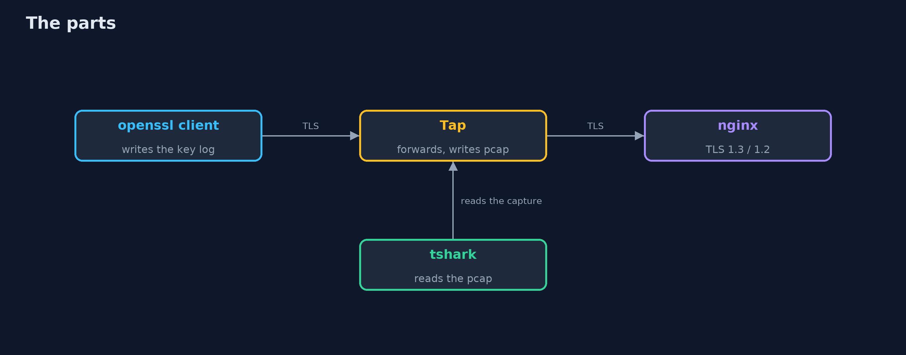
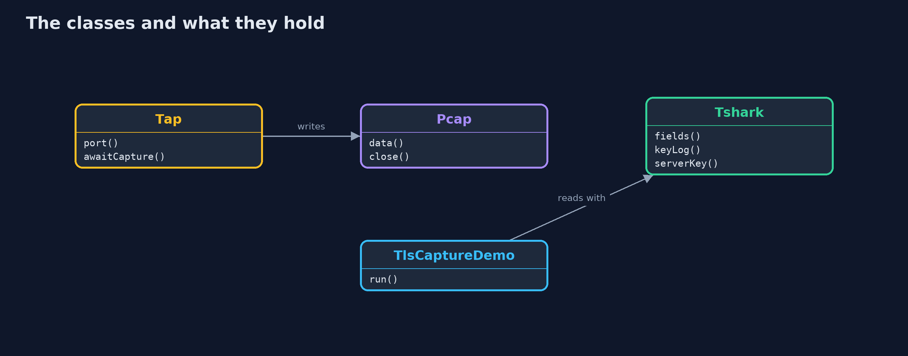
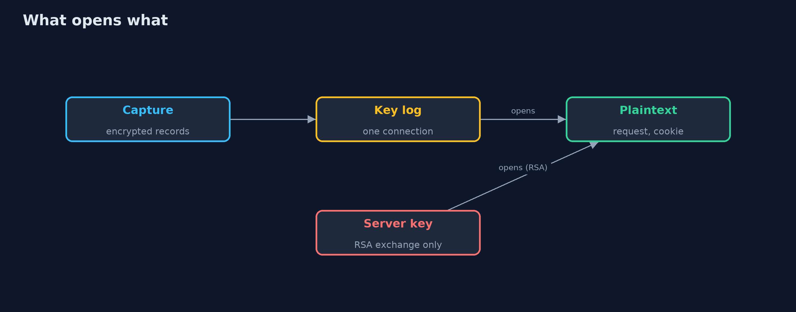
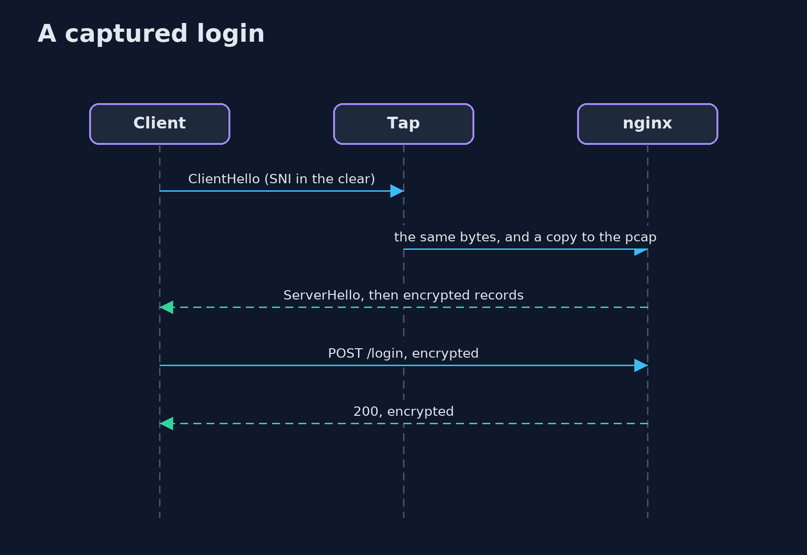

Inspecting TLS Traffic with Wireshark
src/main/java/com/jk/explore/security/tlscapture/
├── Client.java The openssl command as a TLS client; with a key log file it writes the secrets of the connection, as a browser does when SSLKEYLOGFILE is set
├── LegacyServer.java A server that uses RSA key exchange (TLS 1.2), so no forward secrecy: the client encrypts the session secret with the server's public key
├── LocalCa.java A root made with the step command, and the certificates it signs, good and bad
├── Nginx.java A real nginx with a login page, on a loopback port
├── Pcap.java Writes a capture file (pcap, raw IPv4 packets) of one TCP connection between two loopback ports, from the bytes a tap saw
├── Procs.java Small helpers for running programs
├── Tap.java A tap between a client and a server on loopback: it forwards every byte and writes a capture file of what went through
├── TlsCaptureDemo.java One login through a tap, which writes {@code pcap}; the client writes its secrets to {@code keys} when that is not null
└── Tshark.java The tshark command reading a capture file, with or without the secrets of the connection
A capture of a real TLS 1.3 login shows the server name, the cipher the server chose and encrypted records, and nothing of the password; tshark with the key log the client wrote opens that connection (and its encrypted certificate) and no other, a log with only the client's lines opens only requests, and a leaked server key opens a recording made with RSA key exchange but not one made with ephemeral keys.
The plain inspecting-tls-traffic project decrypts a recorded TLS 1.3 session in Java with HKDF. This one uses the real tools: nginx, the openssl client with -keylogfile, and tshark (brew install nginx step wireshark). Nothing is captured from a network card, which needs rights a test should not ask for: a small tap in Java sits between the client and the server on loopback, forwards every byte and writes a capture file (pcap) of what went through, which is all that a machine on the path would see. The tests are tagged integration (the capture-file test is not): ./gradlew integrationTest.
What it shows:
- What the wire shows. The Client Hello names the shop in the clear, the Server Hello picks TLS_AES_256_GCM_SHA384, the rest is encrypted records: no certificate, no HTTP, no password.
- A key log. openssl s_client -keylogfile writes five lines (the client random and a secret each), the same format a browser writes when SSLKEYLOGFILE is set. It holds no private key.
- The same capture with the key log. tshark shows POST /login, the form fields, the cookie, and the encrypted certificate.
- One connection only. A second login is closed to the first login's key log; one file with both logs opens both; a log with only the client's lines opens the requests and not the responses.
- The server's own key. A TLS 1.2 certificate is visible in the clear. With the server's private key, a recording made with ECDHE stays closed and a recording made with RSA key exchange opens, password and all.
Maps to: OWASP Top 10 (2025) A04 Cryptographic Failures · CWE-312 (cleartext storage of sensitive information), CWE-532 · RFC 8446 (TLS 1.3) · the NSS key log format.
The idea in everyday terms
Sealed envelopes carried past a watcher. The watcher sees the address on the outside, the times and the sizes. A note from the sender with that one envelope's key opens that envelope and no other; the post office's master key opens old envelopes only if they were sealed the old way.
The scenario
An online store's shopper logs in over TLS 1.3. The demo plays a person with a capture file and the tools to read it, and shows what they can and cannot learn.
Run
./gradlew run
The demo tells the story in 5 acts, each printing exact numbers that the tests check:
| Act | What it shows |
|---|---|
| 1. What the wire shows | The capture shows the server name, the chosen cipher and encrypted records; the certificate, the request and the password are not there. |
| 2. A key log: the secrets of one connection | The client writes five lines, each tied to one connection by its client random, and no private key. |
| 3. The same capture, read with the key log | tshark with the key log shows the request, the form fields, the cookie and the certificate. |
| 4. A key log opens its own connection and no other | A second login is closed to the first key log; one file with both opens both; a log with only the client's lines opens only requests. |
| 5. The server's own key is a different matter | A TLS 1.2 certificate is in the clear; a leaked server key opens an RSA key exchange recording and not an ECDHE one. |
Test
./gradlew test
11 tests in DemoRunsTest, PcapTest, TlsCaptureTest. The capture-file writer is tested with no program. The other tests need nginx, openssl, step and tshark (./gradlew integrationTest).
What the simulation got right, and what it left out
nginx, openssl and tshark are the real programs; the tap writes a real pcap file. Secrets, ports and packet counts are never printed; the demo takes about half a minute.
Technologies and versions
Every version below is pinned in the project's build files and was the latest stable release when the project was built.
| Technology | Version | Used for |
|---|---|---|
| Java | 25 | the language and runtime; a Gradle toolchain finds or downloads the JDK |
| Gradle | 9.8.1 (wrapper) | build and run; nothing to install, the wrapper downloads it |
| org.junit.jupiter:junit-jupiter | 6.1.3, set by junit-bom | JUnit 5: the tests (tests only) |
| org.junit.platform:junit-platform-launcher | 6.1.3, set by junit-bom | JUnit platform launcher, which Gradle needs to run the tests (tests only) |
| videokit | repository tool (tools/videokit) |
the narrated video and animation: Piper en_US-amy-medium, speed 0.8, longer pauses (the amy-slow voice) |
Learning Material
| Document | What it is for |
|---|---|
| Problem statement | the situation and what the project must show |
| Prerequisites | what you need to know first |
| Inspecting TLS Traffic with Wireshark, explained | the acts in prose |
| Session guide | a one-hour lesson with exercises |
| Animated walkthrough | the acts step by step, narrated |
| Threat model | what is protected, who could harm it, and how, using STRIDE |
| Spec | what this project must be true of |
| Expected output | the golden demo output every test and every port checks against |
The idea in one picture
A tap between the client and the server writes the capture; tshark reads it.

Where each piece sits
The tap and the capture writer, the servers, and the reader.

How the data moves
A key log opens a connection; the server key opens an RSA exchange.

Who calls whom, in order

Video
video/inspecting-tls-traffic-with-wireshark-explained.mp4 (with .m4a audio and .srt subtitles) is built by video/build_video.sh. Rendered media is not committed.
What it costs
- A key log is as good as the password it protects, so where it is written and when it is deleted matter.
- Names, times and sizes stay visible even with TLS 1.3.
- A capture on a real network needs rights that are rightly hard to get.
- Debugging with decryption tempts a team to leave logging on.
When this is too much
If you can read the application's own logs, you rarely need to decrypt the wire. Decrypt traffic when the bug is between the machines: a proxy, a handshake, a header added on the way.
Where you have already met this
- An environment variable
SSLKEYLOGFILEin a developer's shell. - A Wireshark screen full of
Application Data. - A
.pcapattached to a bug report. - Someone saying "just turn off TLS in test".
Where this sits
This is the tools version of inspecting-tls-traffic, in the tls-in-practice module. The certificates come from the kind of authority built in local-certificate-authority-with-step-ca.